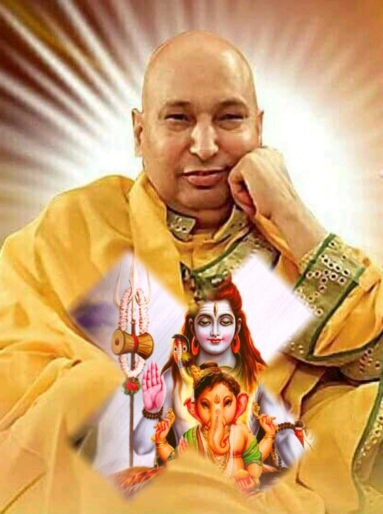

About GuruJi
GuruJi is a revered spiritual leader known for his teachings on meditation, mindfulness, and inner peace. With a deep commitment to guiding individuals on their spiritual journeys, GuruJi has inspired countless people around the world. His satsangs are a source of wisdom and tranquility, offering practical insights into living a balanced and fulfilling life. Through his compassionate approach and profound knowledge, GuruJi continues to touch hearts and transform lives.